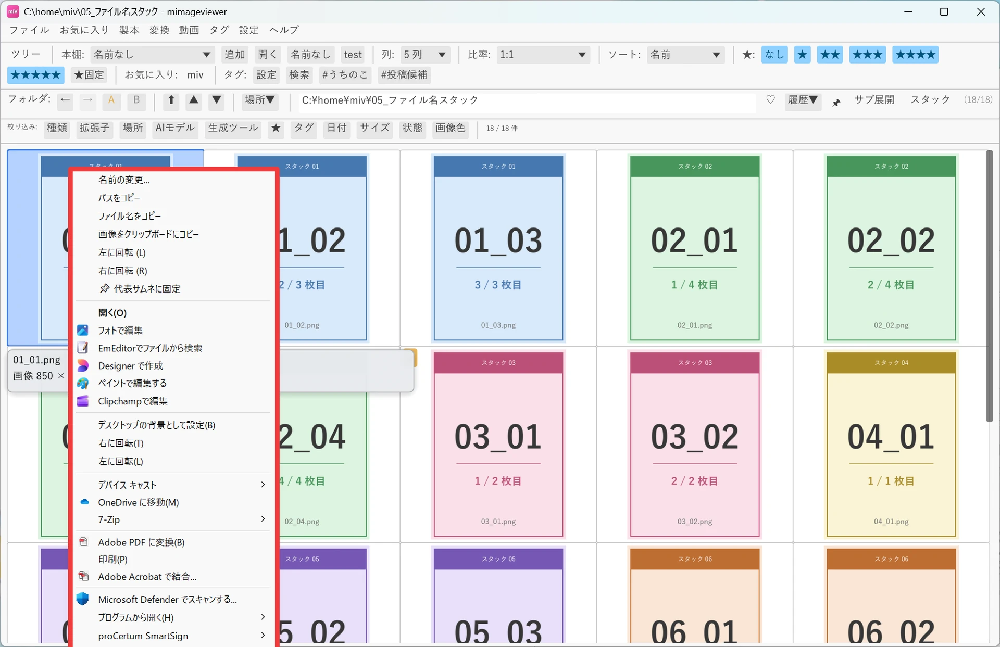
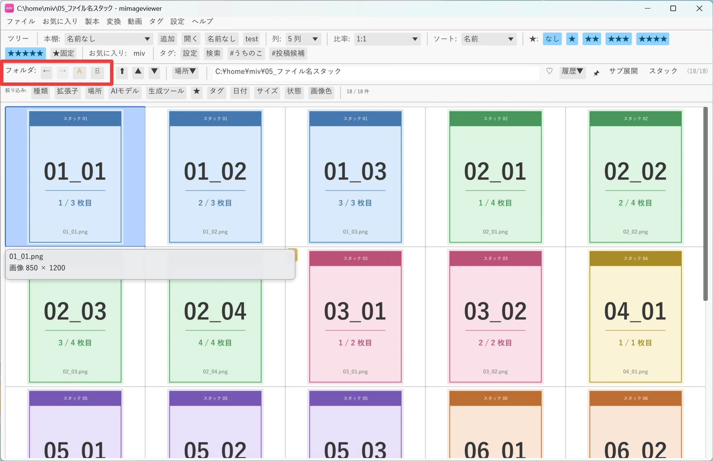

ファイルを整理する（コピー・移動・削除）
グリッドの右クリックメニュー、ドラッグ＆ドロップ、A / B クイックフォルダを使うと、 一覧を見ながら実ファイルをコピー・移動・整理できます。ZIP 内画像や PDF ページなど、 実体が通常のファイルではない項目には制約があるため、先に操作対象の決まり方を押さえておきましょう。
操作対象はカーソル位置とチェックで決まる
チェックした項目が 1 つでもあれば、その全項目が操作対象になります。チェックがなければ、 青いハイライトがあるカーソル位置の 1 件だけが対象です。複数をまとめて整理するときは、 Space や Shift+矢印で先にチェックします。 チェック中は画面右上に件数が表示され、その「選択解除」ボタンですべて解除できます。
登録した先へコピー・移動する
整理先の中身を見たいときは、フォルダバーの 場所▼ → 整理先 から名前を選びます。登録順に並び、マウスを重ねるとパスを確認できます。mIV Remote のホームの「場所」からも開けます。未登録なら表示されず、環境設定の整理先登録欄、または場所▼を右クリックした「場所▼に出す項目」の「整理先」で表示を切り替えられます。
- 環境設定 → ライブラリ → フォルダ・ファイル → ファイル整理先で「追加…」を押し、実フォルダを選びます。表示名と順序を整え、「OK」で保存します。
- 整理する実ファイルや実フォルダをチェックします。チェックがない場合は右クリックした項目が対象です。
- 項目を右クリックし「ファイル整理先…」を選びます。「対象の一覧」を開いて項目を確認し、整理先の名前とパスを確認して、その行の「移動」または「コピー」を押します。
- 同名競合やエラーがある場合は Windows の画面で選びます。転送中の取消も Windows の進捗画面で行います。途中まで完了した処理はそのまま残ります。
整理先は、1 行に「名前」「パス」「移動」「コピー」を並べた表で表示されます。長い名前やパスは省略され、マウスを重ねると全文を確認できます。登録先が多い場合は表を上下にスクロールします。↑ / ↓ で行、← / → で操作を選んで Enter でも実行できます。選択した行には枠、操作には強調表示が付きます。
クリップボードは変わりません。元の一覧で閲覧を続けられ、整理先へ自動移動しません。現在表示している元や先の実フォルダは、エクスプローラーで移動したときと同じ更新に従います。検索結果や保持した一覧などに古い表示が残る場合は、通常の更新や開き直しを行ってください。
★・タグ・編集は整理操作の時点では移しません。★・タグ・編集を記録済みのファイルが復元の対象になります。整理先の通常フォルダを開き、「編集内容の復元」で「復元する」を選ぶと、対象をまとめて引き継げます。先にある編集は上書きしません。「閉じる」だけなら次回も確認されることがあります。
復元確認を OFF にしている場合や、内容一致の記録がないファイルは復元されません。対象は画像、ZIP、PDF / EPUB、対応アーカイブです。フォルダ自身、動画、音声は対象外です。フォルダごと整理した場合は、中の対象ファイルが見える通常フォルダを開きます。ZIP / PDF のページを独立したファイルとして整理する機能ではありません。
右クリックメニューでコピー・移動する
実ファイルまたは実フォルダを右クリックすると、メニューの先頭に「切り取り」「コピー」が表示されます。 ほかの Windows 標準項目は既定で末尾の「Windows のメニュー」にまとめられ、環境設定で同じ階層へ並べることもできます。 先頭の「切り取り」「コピー」はこの設定にかかわらず表示されます。 チェック済みの項目があれば、右クリックした 1 件ではなくチェック済み全体が対象です。
| やりたいこと | 操作 |
|---|---|
| コピー | 右クリックメニュー先頭の「コピー」。Ctrl+C でも実行できます |
| 移動 | 右クリックメニュー先頭の「切り取り」で切り取り、移動先で「貼り付け」。Ctrl+X → Ctrl+V でも実行できます |
| 名前変更 | mImageViewer の項目「名前の変更...」を選び、Windows 標準の入力画面で新しい名前を指定します |
| 削除 | 右クリックメニューの「削除」。Delete キーでもごみ箱へ移動できます |
削除前の確認画面には、削除される項目の名前が先頭から 10 件まで表示されます。 それを超える場合は残りの件数も表示されるので、画面外にチェックした項目が残っていないか確認してから実行してください。 フォルダが含まれる場合は「フォルダの中には一覧に表示していないファイルも含まれます」と表示されます。一覧に見えている項目だけでなく、フォルダ内のすべてが削除対象です。

名前を指定してフォルダを作る
実フォルダの空いている場所を右クリックし、メニュー上部の mImageViewer の項目「新しいフォルダ...」を選ぶと、 Windows 標準の入力画面で名前を指定してからフォルダを作れます。作成後は一覧が更新され、新しいフォルダへカーソルが移ります。 メニュー下部にある Windows 標準の新しいフォルダー作成を選ぶと、名前の入力をスキップして新しいフォルダが作られるため、名前を付けてから作れる mImageViewer 側の項目を使うのがおすすめです。
ドラッグ＆ドロップでやり取りする
mImageViewer から外へドラッグ
実ファイルや実フォルダは、グリッドからエクスプローラなどの外部へドラッグできます。 チェック済みがあればまとめて渡され、操作はコピーとして扱われます。画像・動画・ZIP・PDF などの実ファイルと 実フォルダが対象で、ZIP 内画像・PDF ページ・ドライブ一覧などの仮想項目は外へドラッグできません。
外から mImageViewer へドロップ
外部からのドロップでは、ファイルだけを現在開いている実フォルダへコピーできます。 フォルダをドロップすると「フォルダのドロップは現在無効です」と通知され、コピーされません。 検索結果、ZIP / PDF の中、書き込み先になる実フォルダがない表示でも受け付けられません。
A / B クイックフォルダでコピー元とコピー先を往復する
フォルダバーの A / B ボタンで、2 組の場所と履歴を切り替えられます。 A をコピー元、B をコピー先として開いておけば、ボタンを押すだけで往復できます。
- A / B は、それぞれ最後に見た場所を別々に保持します
- ドライブごとの最後の位置も A / B で別々に保持します
- 戻る / 進むの履歴も A / B ごとに独立しています
- ZIP / PDF の中を見ていた場合は、その内部ページではなく入れ物の場所を記憶します
